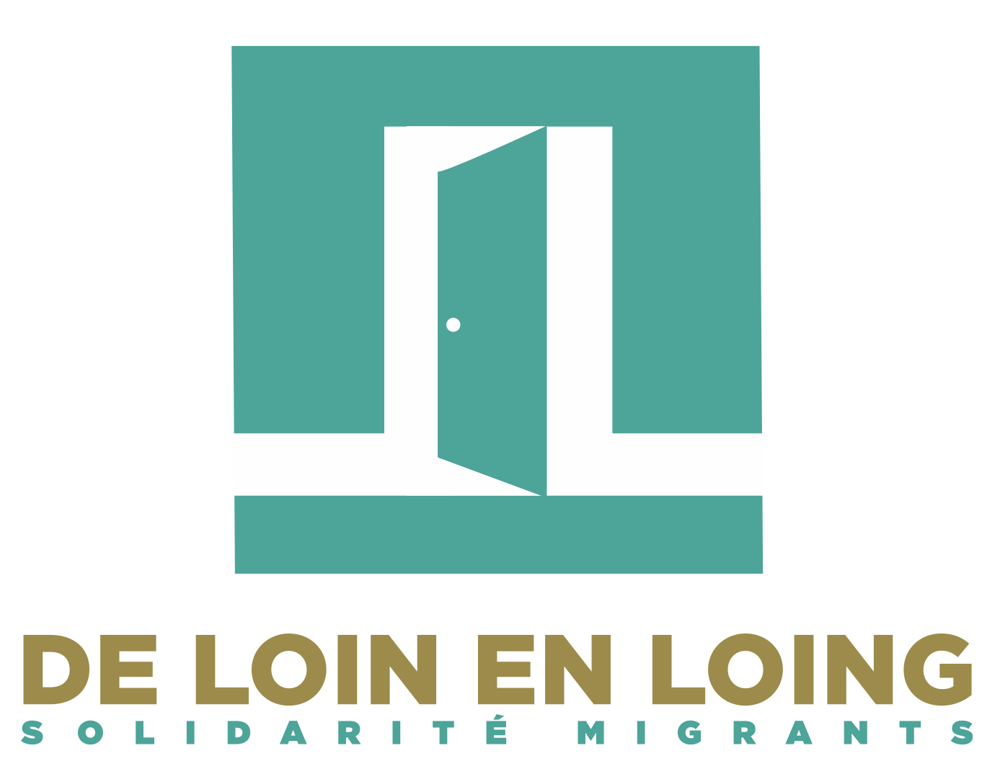

De loin en Loing est une association humanitaire qui a pour objet d’aider les migrants, les réfugiés, les personnes en grande difficulté à la couverture de leurs besoins de base et intérêts vitaux, à la défense de leurs droits sociaux, dans le but de faciliter leur intégration dans la société.
Actualités de l’association
Ouverture du site web
Le site web de De loin en Loing est en ligne depuis le début du mois d’avril 2024. Il est accessible à l’adresse https://www.deloinenloing.com/. C’est une première version, qui évoluera et sera enrichie au cours des prochains mois.
Assemblée générale
La dernière assemblée générale s’est tenue le 2 mars 2024 à 16h. À l’ordre du jour :
L’assemblée générale s’est conclue par un apéritif convivial :)
Retrouvez la présentation faite lors de la réunion, le rapport financier et le PV de l’assemblée générale.
Agenda
Lectures à Provins
Organisé par Amnesty International
28 avril 2024, 15h à 17h15
15 place du Cloître
77160 Provins
Projection-débat autour du film “Moi Capitaine” de Matteo Garrone
Organisé par Amnesty International et l’association Toubabcouta
5 mai 2024, 16h15
Cinéma Le Méliès
9 Rue Bezout
77140 Nemours
Copyright © 2024 DE LOIN EN LOING, Solidarité migrants